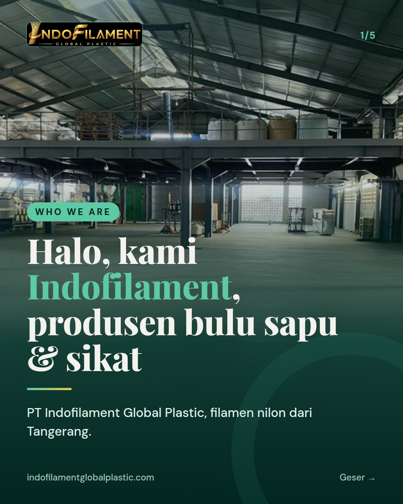
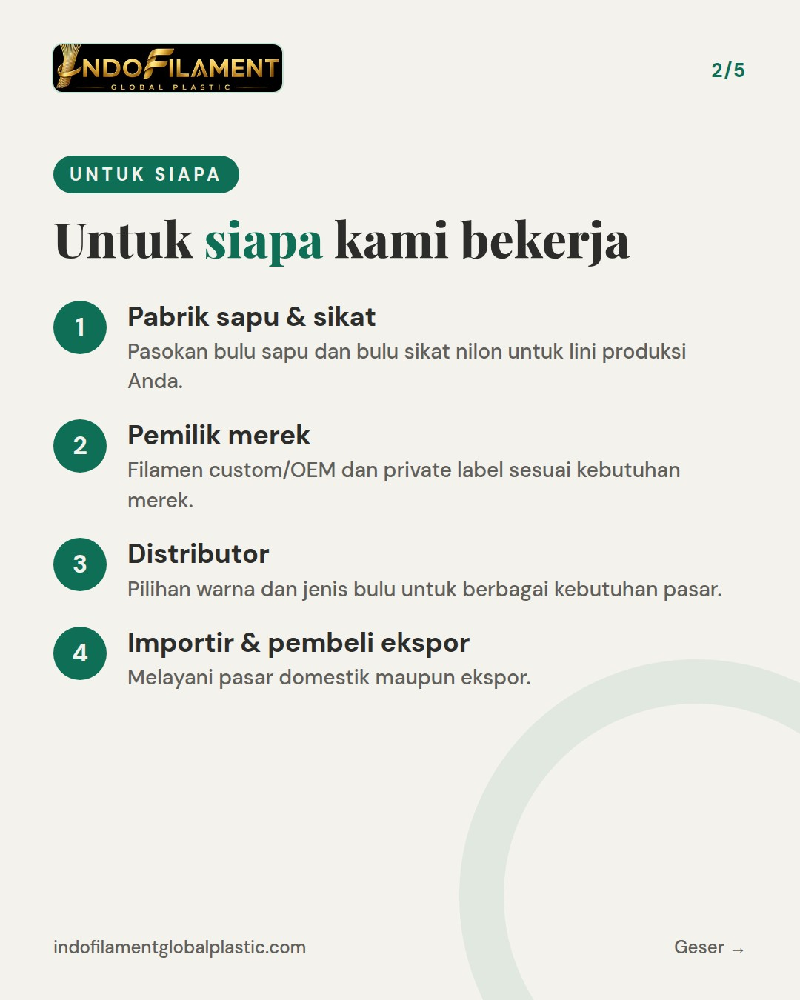
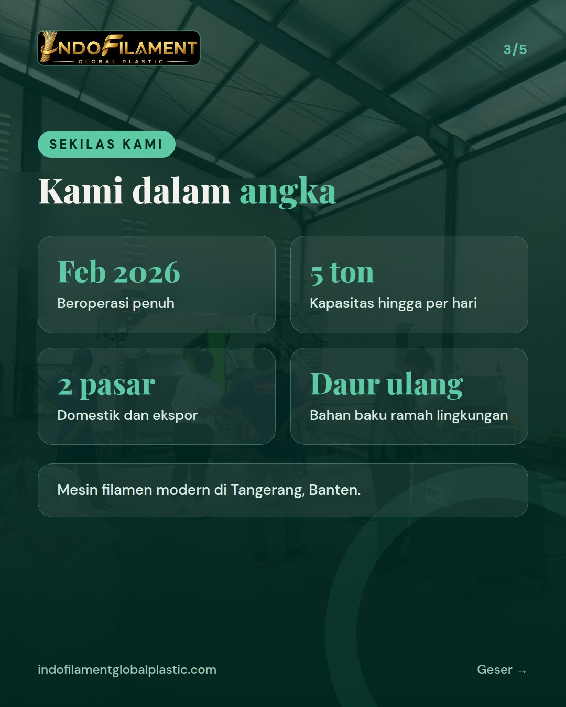
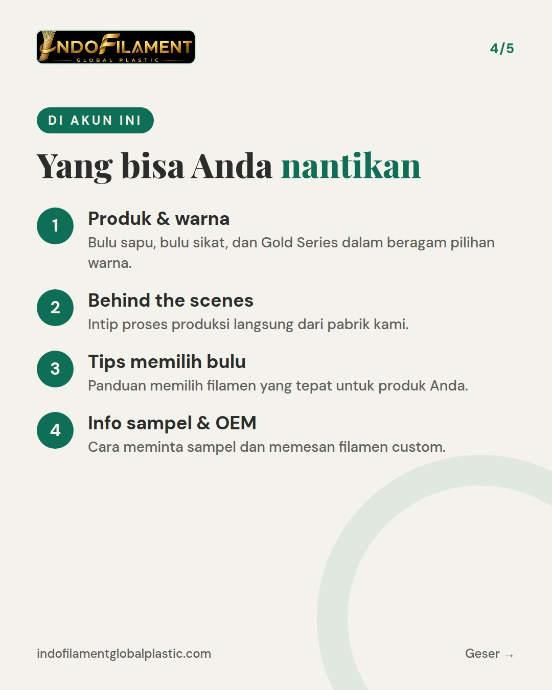
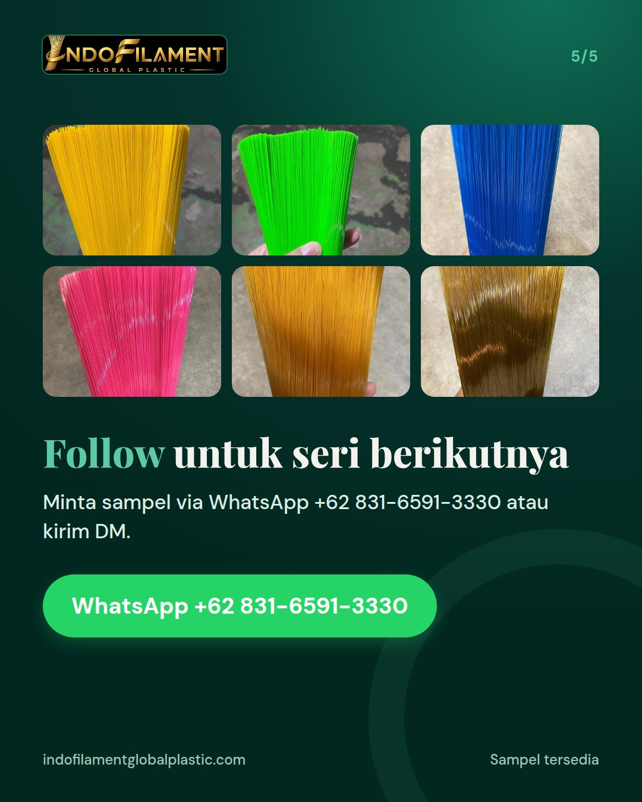

PERKENALAN 1 dari 3 - WHO WE ARE (siapa kami). Kicker cover: Who We Are. Isi: sapaan hangat untuk postingan pertama akun; kami Indofilament (PT Indofilament Global Plastic), produsen bulu sapu dan bulu sikat (filamen nilon) dari Tangerang untuk pabrik dan merek sapu/sikat di Indonesia maupun pembeli ekspor; untuk siapa kami bekerja; apa yang bisa diharapkan dari akun ini (produk, warna, behind the scenes pabrik, tips memilih bulu). Caption: bagian pertama dari seri perkenalan, ajak follow.





Halo! 👋 Ini postingan pertama kami, dan kami senang akhirnya bisa menyapa Anda. Kami Indofilament (PT Indofilament Global Plastic), produsen bulu sapu dan bulu sikat (filamen nilon) dari Tangerang, Banten. Kami bekerja untuk pabrik dan merek sapu/sikat, distributor, serta pembeli ekspor. Pabrik kami beroperasi penuh sejak Februari 2026 dengan mesin filamen modern dan kapasitas hingga 5 ton per hari, memakai bahan baku plastik daur ulang yang ramah lingkungan. Di akun ini Anda bisa menantikan info produk dan pilihan warna, behind the scenes pabrik, serta tips memilih bulu yang tepat untuk produk Anda. Ini bagian pertama dari seri perkenalan kami. Follow supaya tidak ketinggalan bagian berikutnya! 🙌 Minta sampel via WhatsApp +62 831-6591-3330 atau kirim DM. Pabrik kami juga terbuka untuk dikunjungi. For export buyers: we are a nylon broom and brush filament manufacturer based in Tangerang, Indonesia. Custom/OEM and private label available. Request a sample via WhatsApp +62 831-6591-3330. #bulusapu #bulusikat #filamen #pabriksapu #madeinindonesia #broomfilament #brushfilament #nylonfilament #filamennilon #tangerang #privatelabel #OEM